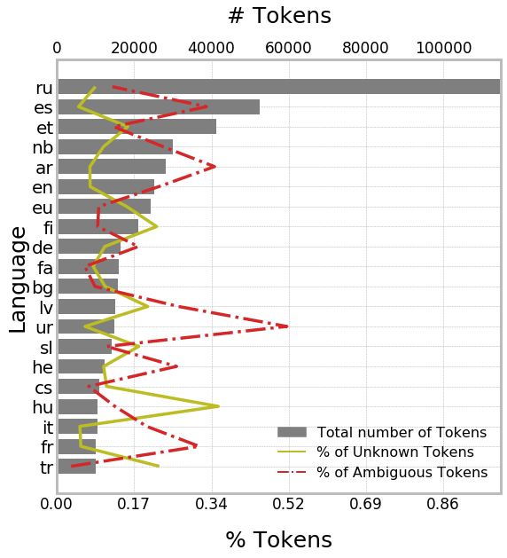

Improving Lemmatization of Non-standard Languages with Joint-Learning
Enrique Manjavacas (University of Antwerp)
Ákos Kádár (Tilburg University)
Mike Kestemont (University of Antwerp)
1 Lemmatization
Task Definition
Applications
- Linking to dictionary
- Stylometry
- Topic Modeling
- Text Classification (esp. for morphologically complex languages)
Challenges
- Token-lemma disambiguation
- Morphological Complexity
Historical Languages
- Span a long historical period
- Lack a strong standard spelling system
- Present high genre specificity
Additional Challenging Aspect
- Token-lemma disambiguation
- Morphological Complexity
- Orthographic Variation
Orthographic Variation Examples

Implications of Orthographic Variation for Lemmatization
- Increases token-lemma ambiguities
- Sparsifies evidence for token-lemma mappings (due to higher token/type ratio)
2 Corpus
Historical Languages
- Selection of open-source 9 corpora
- Languages:
- Latin
- Middle-low German
- Medieval French
- Historical Slovene
- Medieval Dutch
Standard Languages
20 Languages from the Universal Dependencies
Statistics


3 Architecture
Encoder-Decoder
Modeling Sentential Context

Improved Sentence Encodings

Joint Learning
\(P_{lemma}(l^t_{1\ldots n}|w^t) = P(l_n|s^t) \cdot P(l^t_{1\ldots n-1}|s^t)\)
\(P_{LM}(w^t) = \boldsymbol{\gamma_{fwd}} P(w^t|s^{t-1}_{fwd}) + \boldsymbol{\gamma_{bwd}} P(w^t|s^{t+1}_{bwd})\)
\(P = P_{lemma} + \boldsymbol{\beta} P_{LM}\)
4 Baselines
- Strongest pre-neural data-driven lemmatizers
- Based on edit-tree induction
Morfette (Chrupała et al. 2008)
Beam-search decoding of edit trees https://github.com/gchrupala/morfette
Lemming (Cotterel et al. 2015)
Second-order decoding CRF of POS and edit-trees http://cistern.cis.lmu.de/lemming/
5 Evaluation
- Accuracy of known, unknown and ambiguous tokens
- (Un)known & ambiguous is empirically determined based on train/dev split
6 Results
Historical Languages

Gysseling Corpora (Medieval Dutch; 4 genres)
Standard Languages

Results by Morphological Typology
Type 1 bg, cs, lv, ru, sl
Type 2 et, fi, hu, tr
Type 3 de, en, es, fr, it, nb
7 Discussion
Limits of edit-tree induction

Error reduction of best Neural vs best Tree-induction by #Trees
How does sentence encoding fine-tuning helps

Error reduction of SentLM vs Sent by Ambiguity
Why does it help?

Diagnostic classifiers trained on frozen encodings to predict morphology
8 Thank you
- Download & Preprocessing Scripts: https://www.github.com/emanjavacas/pie-data
- Sequence Labeling Framework: https://www.github.com/emanjavacas/pie
- This presentation: https://emanjavacas.github.io/slides-content/minneapolis19